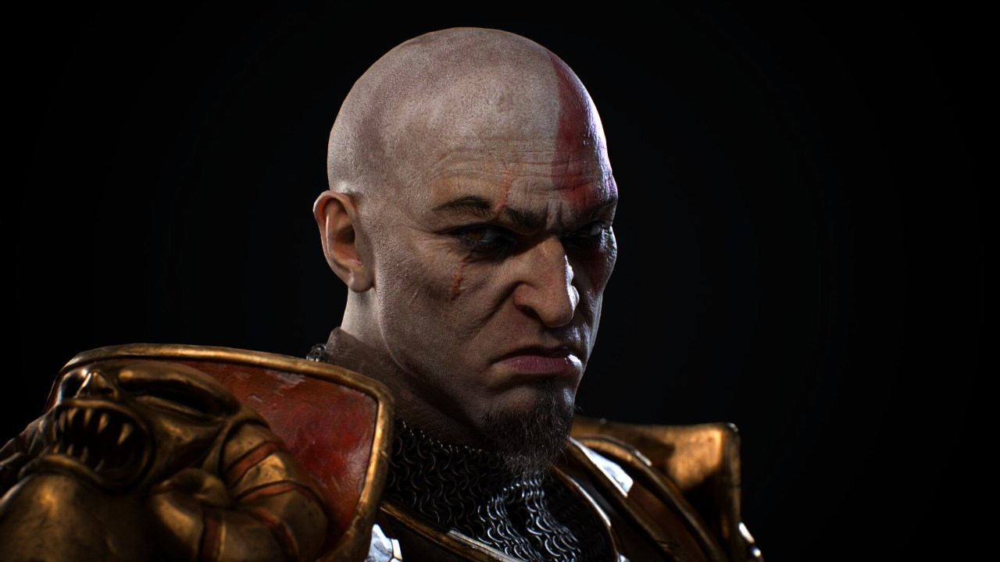

God of War Laufey entra em pré-venda e tem novo gameplay revelado
Confira nova arma de God of War: Laufey, o Arco de Serpente, e também novidades sobre a pré-venda do jogo no PlayStation 5, incluindo bônus e uma edição Digital Deluxe
Confira
Confira nova arma de God of War: Laufey, o Arco de Serpente, e também novidades sobre a pré-venda do jogo no PlayStation 5, incluindo bônus e uma edição Digital Deluxe
Confira
Remake ainda não possui data de lançamento e contará com um novo sistema de combate
Confira
A Amazon está em negociações com Dave Bautista – o Drax, O Destruidor da Marvel – para ser o novo Kratos na série de God of War.
Confira